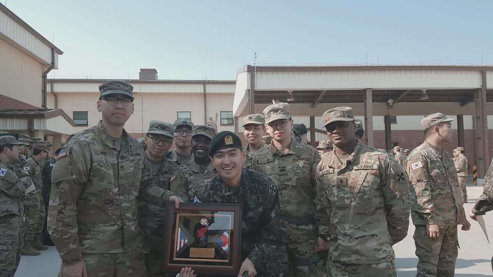
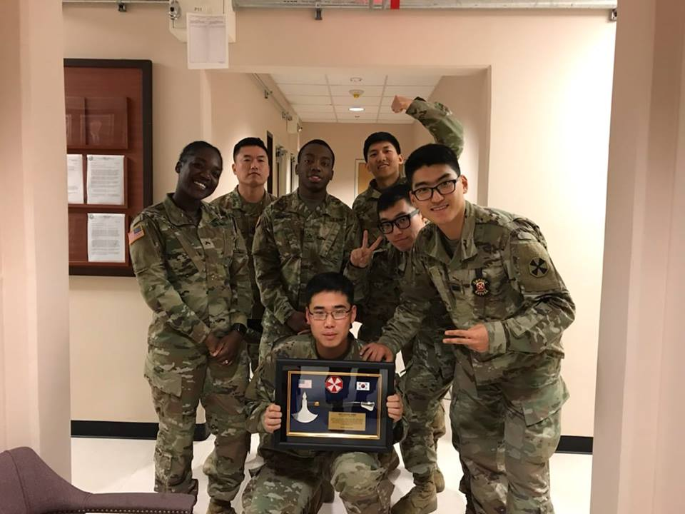
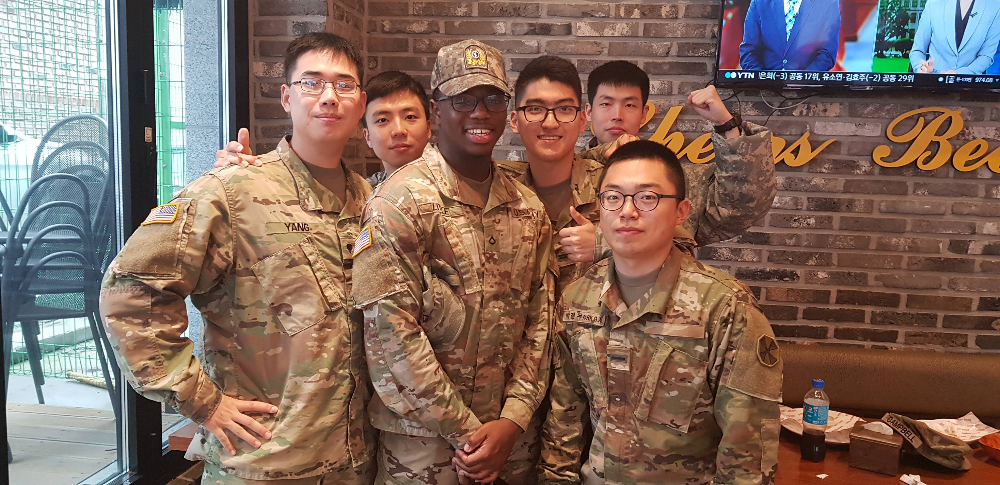
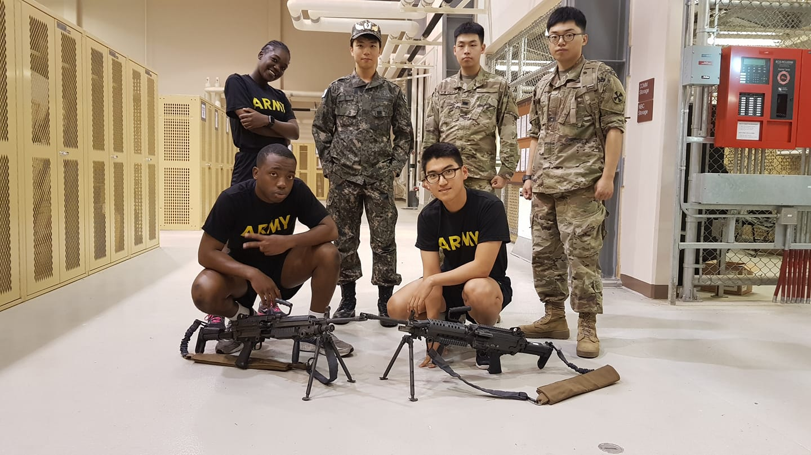
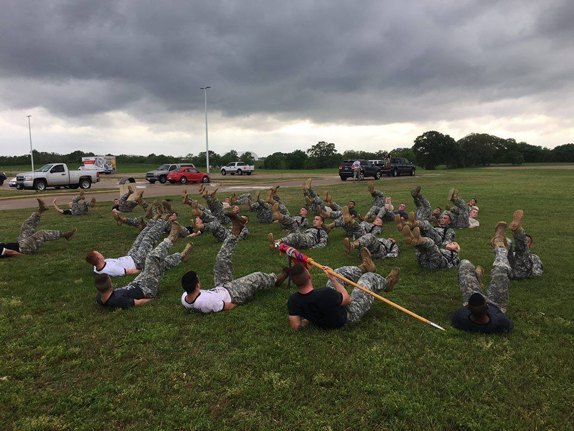
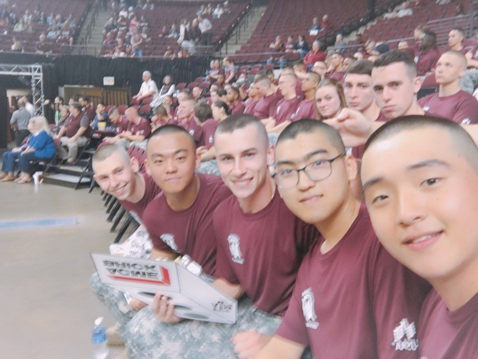
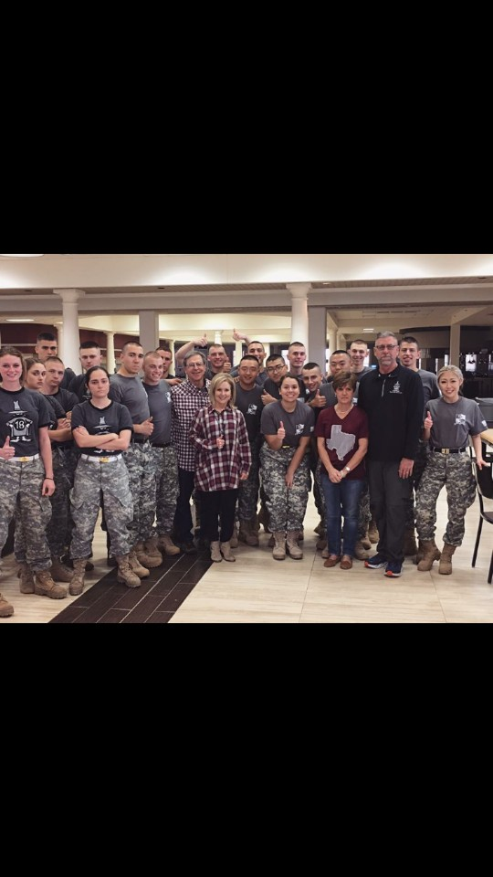
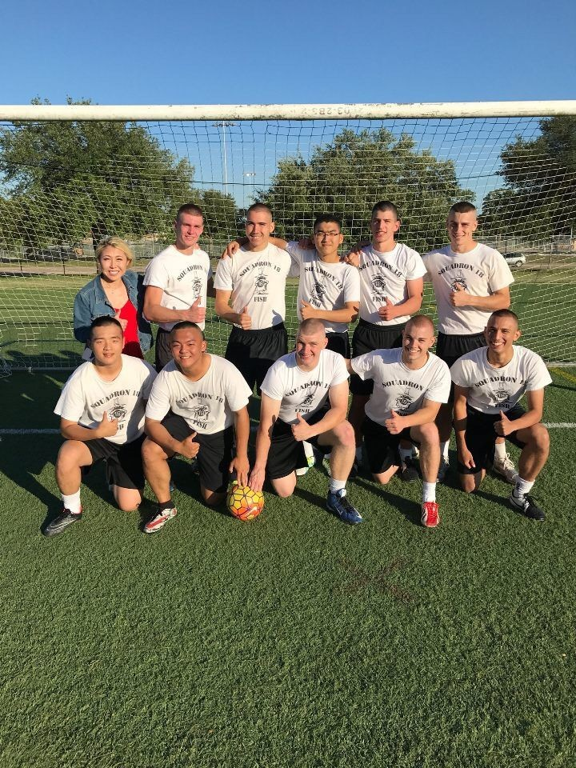
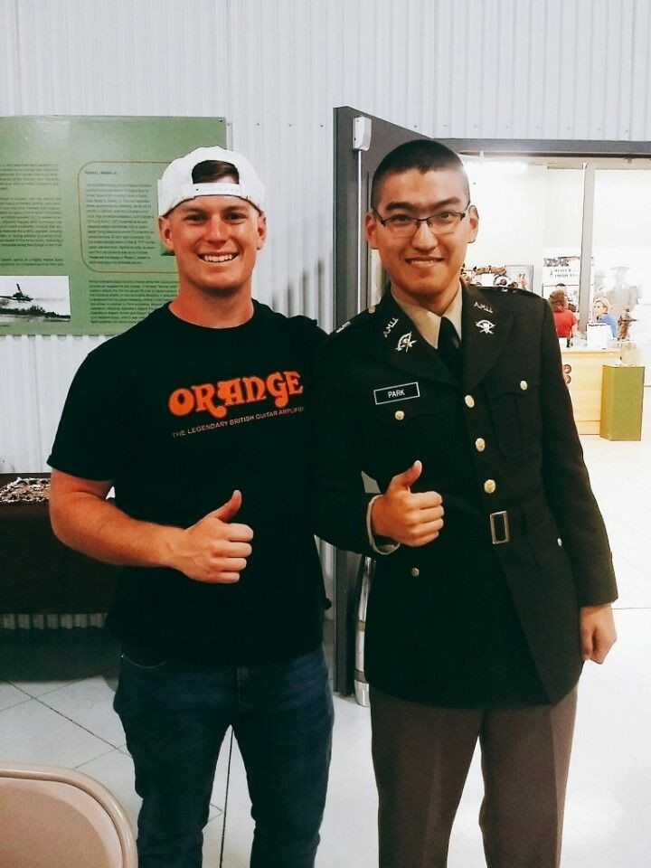

KATUSA (Korean-Augmentation to the U.S. Army)
KATUSA is a branch of the Republic of Korea Army that consists of Korean drafted personnel who are augmented to the United States Army. This program is for alliance between United States Army and South Korea Army. I Served as the supply clerk responsible for weapons, chemical gears, rooms, and tactical vehicle.




